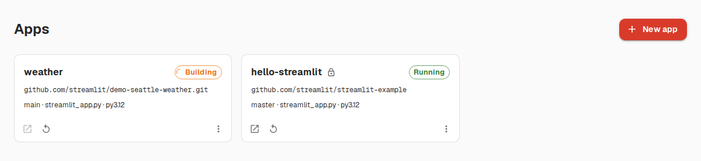
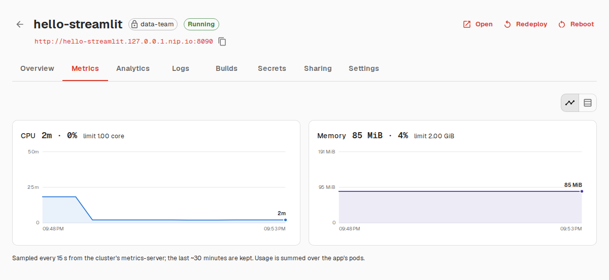
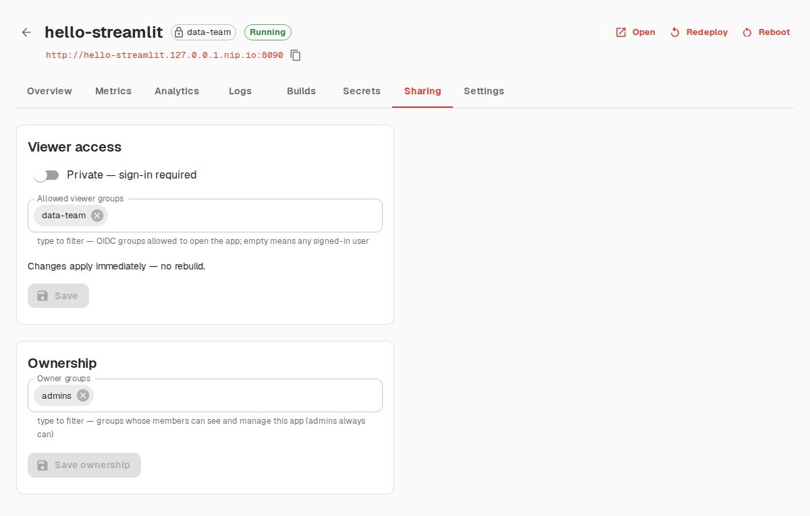
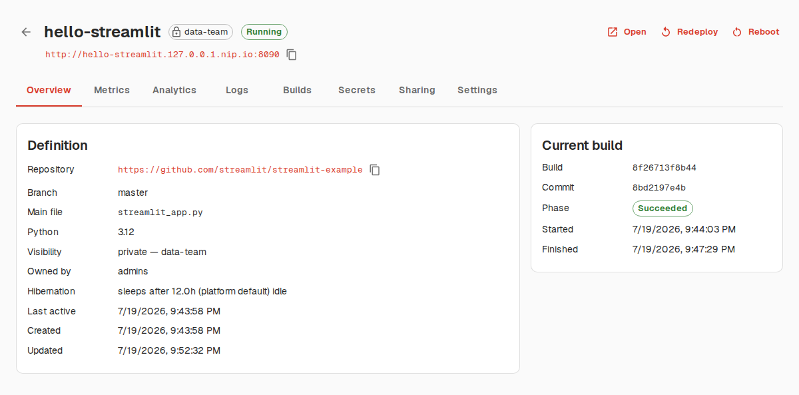

Streamlit hosting,
on your cluster.
Point Orbital at a git repo and the app is live on its own subdomain minutes later — with secrets, logs, automatic redeploys, and hibernation, all running on infrastructure you control.
Helm chart · runs on any Kubernetes cluster · make setup-minikube for local dev
From git repo to live app, no infra work
Three steps, entirely self-hosted — no dependency on external SaaS beyond the git host and your identity provider.
Point at a repo
Give a git URL, branch, and main file. Orbital resolves dependencies from uv.lock, requirements.txt, or pyproject.toml — whichever the repo has.
Build & deploy
An immutable image is built in-cluster with BuildKit and deployed behind ingress at https://<slug>.<domain>. Status and logs stream live to the dashboard.
Push to redeploy
A per-app webhook (GitHub, GitLab, Gitea, generic) triggers a rebuild on push. Unchanged dependencies reuse the cached layer for fast rebuilds.
Everything a team needs to run Streamlit apps
Not just a deploy button — day-two operations are built in.
Deploy from git
Clones the repo, resolves dependencies, builds an immutable container image, and deploys it behind its own subdomain.
Automatic redeploys
Webhooks from GitHub, GitLab, Gitea, or a generic push trigger a rebuild — cached dependency layers keep it fast.
Secrets management
TOML secrets edited in the dashboard, mounted at .streamlit/secrets.toml so st.secrets works exactly as it does locally.
Sharing & access control
Apps are public or private behind OIDC login with per-app viewer allowlists; the console has group-based admin/creator/viewer roles.
App management
Live log streaming, reboot, rollback to a previous build, per-app CPU/memory indicators, and delete.
Hibernation
Idle apps scale to zero and wake automatically on the next request — no wasted cluster resources.
Analytics
Per-app view counts and unique-viewer trends, visible to owners and admins.
Safe multi-tenancy
Every app runs as an isolated, hardened Deployment — non-root, read-only rootfs, no service-account token. Builds run in a separate namespace.
A dashboard for everything the platform does
Deploy, observe, configure, share, and delete — nothing requires kubectl.
One view of every app
Apps are cards with live state — running, building, sleeping, or failed — refreshing automatically. Deploy a new one without leaving the page.
- Redeploy, reboot, or delete from the overflow menu
- Private apps show a lock icon; state updates every few seconds
- Click through to full detail: logs, builds, metrics, sharing

Resource usage, without leaving the dashboard
CPU and memory charts per app, sampled every 15 seconds from the cluster's metrics-server, next to the platform limit each app is running against.
- Definition, current build phase, and commit at a glance on Overview
- Tabs for metrics, logs, build history, secrets, sharing, and settings
- Redeploy or roll back to any previous build in one click

Share with exactly who should see it
Flip an app private and it sits behind OIDC login with a per-app viewer allowlist — any provider with a groups claim works.
- Public or private, changed live with no rebuild
- Allowlist by group; empty means any signed-in user
- Console roles (admin / creator / viewer) are group-based too

Built to run entirely on your cluster
No external SaaS in the loop beyond the git hosts you deploy from and
your organization's OIDC identity provider. Every piece — control
plane, builds, apps, ingress — runs as Kubernetes objects you can
inspect with kubectl.
- FastAPI control planeReconciles desired state (in the database) against the cluster — the single brain that owns every Kubernetes write.
- BuildKit in a JobEach build runs isolated in the
streamlit-buildsnamespace, non-root, with cache-mount speedups for pip/uv. - Hardened app DeploymentsOne namespace for all apps, per-pod isolation: non-root, read-only rootfs, no service-account token.
- oauth2-proxy + your IdPPrivate apps and the console itself sit behind OIDC login; roles and allowlists resolve from group claims.
